File: 000660.gt.txt (if the image is defective, simply delete all Arabic text and the line will be excluded)
يعظم ملكه ، ويرفع شانه ! فمضوا مع سليمان حتى علا منبر داود ، واجتمع
File: 000661.gt.txt (if the image is defective, simply delete all Arabic text and the line will be excluded)
عليه أهل الملكة ، فقال داود:هكذا اعلمني الله أن يملك سليمان ابني ، وعيناي
File: 000662.gt.txt (if the image is defective, simply delete all Arabic text and the line will be excluded)
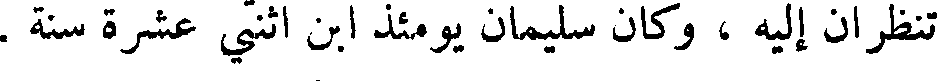
تنظران إليه ، وكان سليمان يومئذ ابن اثنتي عشرة سنة .
File: 000663.gt.txt (if the image is defective, simply delete all Arabic text and the line will be excluded)
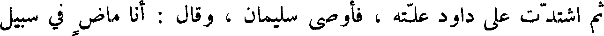
ثم اشتدت على داود علته ، فأوصى سليمان ، وقال : أنا ماض في سبيل
File: 000664.gt.txt (if the image is defective, simply delete all Arabic text and the line will be excluded)
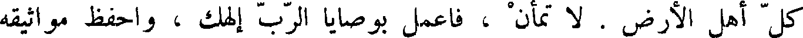
كل أهل الأرض . لا تمأن ، فاعمل بوصايا الرب إلهك ، واحفظ مواثيقه
File: 000665.gt.txt (if the image is defective, simply delete all Arabic text and the line will be excluded)
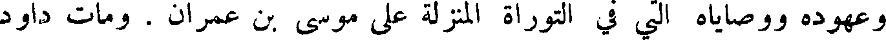
وعهوده ووصاياه التي في التوراة المنزلة على موسى بن عمران . ومات داود
File: 000666.gt.txt (if the image is defective, simply delete all Arabic text and the line will be excluded)
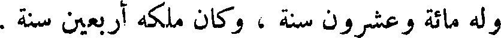
وله مائة وعشرون سنة ، وكان ملكه أربعين سنة .
File: 000667.gt.txt (if the image is defective, simply delete all Arabic text and the line will be excluded)
وسار إلى خاله ، فزوجه إياها ، فقال يعقوب : أن التي كانت مسماة لي راحيل
File: 000668.gt.txt (if the image is defective, simply delete all Arabic text and the line will be excluded)
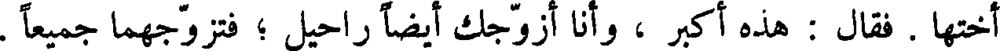
أختها . فقال : هذه اكبر ، وأنا أزوجك أيضا راحيل ؛ فتزوجهما جميعا .
File: 000669.gt.txt (if the image is defective, simply delete all Arabic text and the line will be excluded)
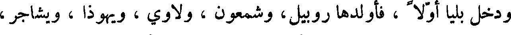
ودخل بليا أولا ، فأولدها روبيل، وشمعون ، ولاوي ، ويهوذا ، ويشاجر ،
File: 000670.gt.txt (if the image is defective, simply delete all Arabic text and the line will be excluded)
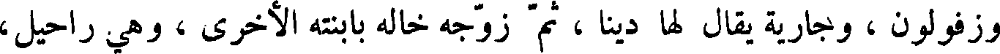
وزفولون ، وجارية بقال لها دينا ، ثم زوجه خاله بابنته الأخرى ، وهي راحيل ،
File: 000671.gt.txt (if the image is defective, simply delete all Arabic text and the line will be excluded)
فأبطأ عليها الولد ، حتى عظم ذلك عليها ، ثم وهب الله ، سبحانه وتعالى ،
File: 000672.gt.txt (if the image is defective, simply delete all Arabic text and the line will be excluded)
يوسف وبنيامين .
File: 000673.gt.txt (if the image is defective, simply delete all Arabic text and the line will be excluded)
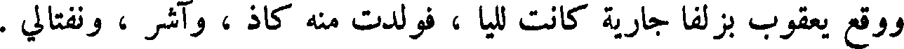
ووقع يعقوب بزلفا جارية كانت لليا ، فولدت منه كاذ ، وآشر ، ونفتالي .
File: 000674.gt.txt (if the image is defective, simply delete all Arabic text and the line will be excluded)
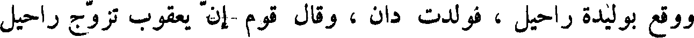
ووقع بوليدة راحيل ، فولدت دان ، وقال قوم إن يعقوب تزوج راحيل
File: 000675.gt.txt (if the image is defective, simply delete all Arabic text and the line will be excluded)
قبل ليا ، وقال أهل الكتاب تزوجهما جميعا في وقت واحد ، فماتت راحيل ،
File: 000676.gt.txt (if the image is defective, simply delete all Arabic text and the line will be excluded)
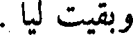
وبقيت ليا .
File: 000677.gt.txt (if the image is defective, simply delete all Arabic text and the line will be excluded)
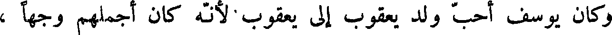
وكان يوسف احب ولد يعقوب إلى يعقوب لأنه كان أجملهم وجها ،
File: 000678.gt.txt (if the image is defective, simply delete all Arabic text and the line will be excluded)
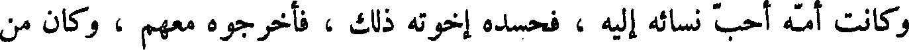
وكانت أمه احب نسائه إليه ، فحسده اخوته ذلك ، فأخرجوه معهم ، وكان من
File: 000679.gt.txt (if the image is defective, simply delete all Arabic text and the line will be excluded)
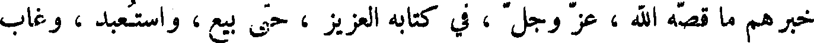
خبرهم ما قصه الله ، عز وجل ، في كتابه العزيز ، حتى بيع ، واستعبد ، وغاب
File: 000680.gt.txt (if the image is defective, simply delete all Arabic text and the line will be excluded)
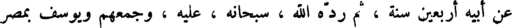
عن أبيه أربعين سنة ، ثم رده الله ، سبحانه ، عليه ، وجمعهم ويوسف بمصر
File: 000681.gt.txt (if the image is defective, simply delete all Arabic text and the line will be excluded)
على ما قد قصه الله في كتابه .
File: 000682.gt.txt (if the image is defective, simply delete all Arabic text and the line will be excluded)
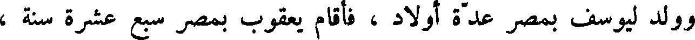
وولد ليوسف بمصر عدة أولاد ، فأقام يعقوب بمصر سبع عشرة سنة ،
File: 000683.gt.txt (if the image is defective, simply delete all Arabic text and the line will be excluded)
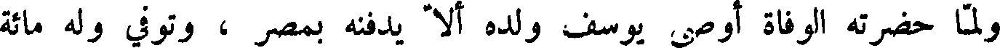
ولما حضرته الوفاة أوصى يوسف ولده ألا يدفنه بمصر ، وتوفي وله مائة
File: 000684.gt.txt (if the image is defective, simply delete all Arabic text and the line will be excluded)
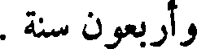
وأربعون سنة .
File: 000685.gt.txt (if the image is defective, simply delete all Arabic text and the line will be excluded)
متوشلح بن اخنوخ
File: 000686.gt.txt (if the image is defective, simply delete all Arabic text and the line will be excluded)
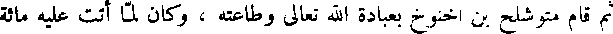
ثم قام متوشلح بن اخنوخ بعبادة الله تعالى وطاعته ، وكان لما أتت عليه مائة
File: 000687.gt.txt (if the image is defective, simply delete all Arabic text and the line will be excluded)
وسبع وثمانون سنة ، ولد له لمك ، فأوحى الله إلى نوح في عصره ، واعلمه انه
File: 000688.gt.txt (if the image is defective, simply delete all Arabic text and the line will be excluded)
باعث الطوفان على الناس ، وأمره أن يعمل السفينة من الخشب ، ولما كملت لنوح
File: 000689.gt.txt (if the image is defective, simply delete all Arabic text and the line will be excluded)
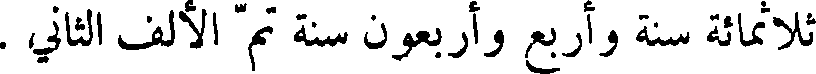
ثلاثمائة سنة وأربع وأربعون سنة تم الألف الثاني .
To Save: `Ctrl+s`, make sure to choose `Webpage, complete`!